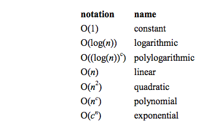

How efficient is a piece of code or an algorithm? This is an important question for developers, and one that I've been contemplating for the past few weeks at Dev Bootcamp. Many factors affect efficiency, but there are two in particular that I wish to focus on: performance and complexity. Performance deals with how much time/memory/disk etc. is used when a program is run, and depends on the machine, compiler, etc. in addition to the code. Complexity involves what occurs as the size of the problem being solved gets longer. It is important to note that complexity affects performance, but not the other way around. These two concepts are vital for discussing Big O Notation.
When considering the complexity of a method, we are really talking about how the number of operations (hence 'O') relates to the problem size. Some methods perform the same number of operations each time they are called (e.g. #size method) while others perform different numbers of operations depending on the value of a parameter. A good way to understand this is that the time required by a method to execute is proportional to the number of basic operations that it performs. So if the problem size doubles, will the number of operations remain the same? double? or increase by another amount? Thus for a method's complexity, what is important is this question: what is the most operations that may be performed for a given problem size?
Complexity is expressed by using big-O notation. Also referred to as Landau's symbol, is used in complexity theory, computer science, and mathematics to describe how fast a method grows or declines (asymptotic behavior). It was invented by Edmund Landau, the German number theoretician; the letter O is used because the rate of growth of a function is also called its order. The following image illustrates the classes of common functions that you come across when analyzing algorithms:
For instance, when looking at a constant-time method, we say that it is 'order 1': O(1). In the chart, the slower growing functiosn are listed first and c is an arbitrary constant. O(n!) is the worst complexity because it requires many operations(hundreds!) just for a few elements while O(1) is the best complexity, and only requires a constant number of operations for any number of elements. There are many other important aspects of big-O notation that are beyond the scope of this introductory post, but these resources are a great way to get your feet wet, the third of which is a cool cheat sheet:
CheatSheet, MIT Introduction, Wisc.edu
Jensen Bouzi September 26, 2014